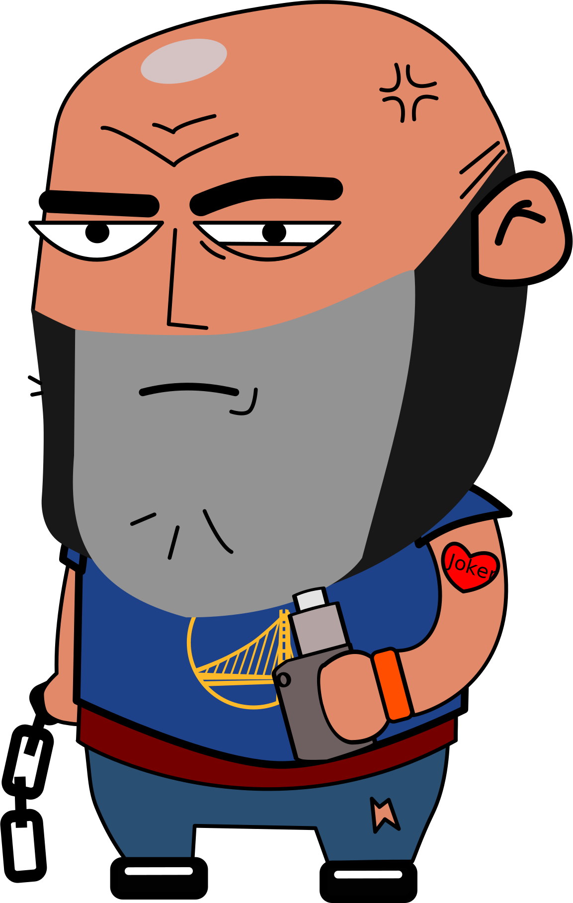
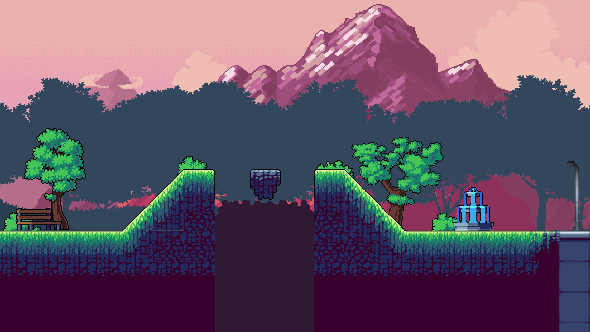
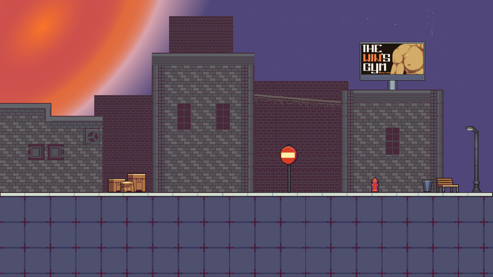
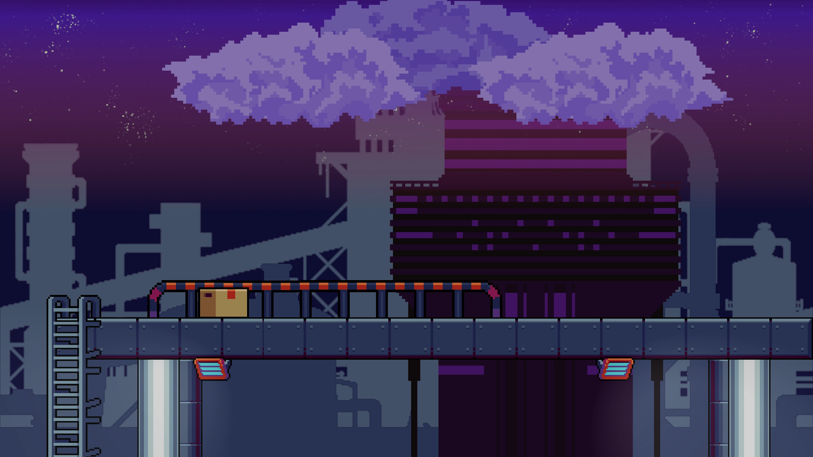
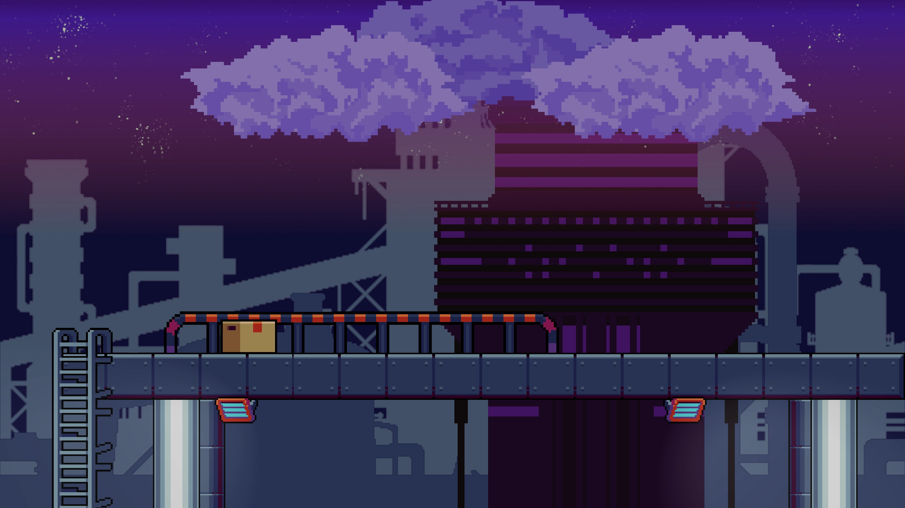
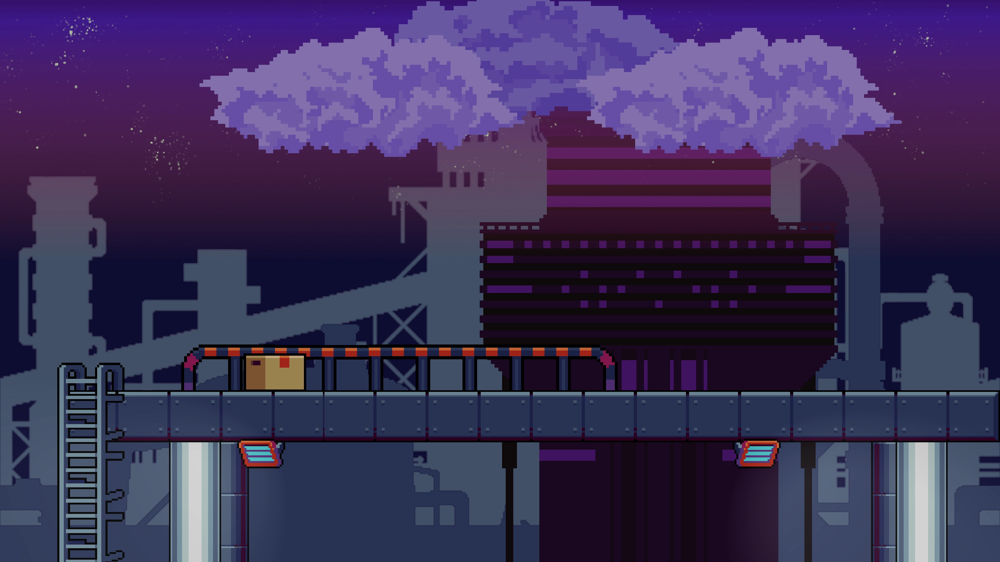

Personajes
En Streets of Farra vas a encontrar diversos personajes con ganas de gresca.En este juego controlarás a Joselu, tendrás que conseguir vapes derrotando a los diferentes enemigos, ten cuidado con los hooligans salvajes que protegen a Ortegano, el vapeador octogenario.
- Ortegano
- Joselu
- Hooliganeitor


El mundo de Streets of Farra
En la ciudad de Farra se puede encontrar todo tipo de pintorescos personajes, pero no es lo único que tu vista va a degustar.
En Streets of Farra vas a encontrarte diversos paisajes, desde las zonas más naturales de las afueras de la ciudad hasta la vieja fábrica abandonada que se cae a pedazos.
MAPAS


 


MÚSICA
No es oro todo lo que se ve, también lo que se oye. Además de la increible calidad gráfica, el apartado de sonido también es sorprendente, aquí teneís un adelanto de la banda sonora.